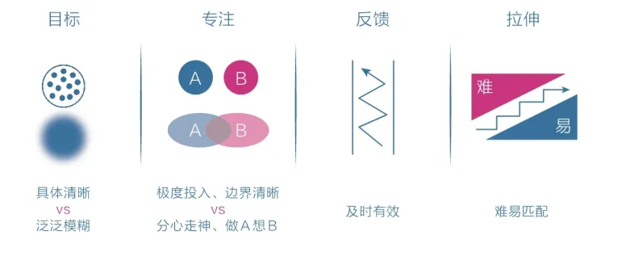

阅读时间：2022-12-13 至 2023-02-10
读后感
新年第一本书阅读拖延了很久，起始篇幅不算长，但是内容很丰富充足。 读完居然过去四天了，我还没开始写读后感，怕我都快忘了内容了还没写(拖延症晚期)。不过今天精神状态很不好，联想到书中的一些观点，十分有感就想写一点。 人的欲望无穷尽但是人的精力其实十分有限。就比如最近的工作和生活状态都十分倦怠，我自己静下来好好地思考了一下，在这里不想说工作上和生活较大范围的情况，就说说我发现自己手机上内存满了这件事。 手机是128G的，以前用64G的时候用了几年确实不够用，到了只有1-2G空余的状态，然后换了128之后，最近发现居然113了，也就是剩下15左右的空余。我就看到底是什么占用了，首先微信、原声、相片这三巨头占用确实厉害，已经用掉70左右。剩下一些1-2G左右的app还是我前两周清过缓存的，也有10个左右。然后剩下几十个几百M的，翻了一下感觉都很需要，又觉得不能卸载，于是又放着不动，但是看着日渐增长的占用率心理好难受。 看回来，明明有几十个app却感觉都需要不能被卸载，抛开app适用于我的各类场景不说，这之间肯定混杂了一些我自以为需要但是实际上我用不起来的app。首先我不存在有20个一定要使用app的场景、其次如果只存在10个场景，那么也就是每个场景平均使用至少2个以上app。这里让我开始考虑，如果两三个场景需要我用2个以上app我觉得也能勉强接受吧，但是如果超出三个场景都需要2+app去满足，或者单个场景需要4+app去满足的时候，这个场景本身是否已经被这些app分散和消耗掉一些精力。 在我看来，答案是肯定的。 从这个角度考虑我需要去做的简化有：⭕️-减掉非必须的场景；一定存在一些场景是我主观创造的。比如我觉得要看书，看一些职业需要的学习，要听播客等，但实际上我并没有计划性或者落地去做。⭕️-单个场景需要满足的点太多，比如说购物、现在手机上有淘宝、天猫、京东、唯品会等，虽然不同平台有相应的具体购买需求，但是太多了导致去选的时候也会消耗精力。 基于以上，这几天首先会去做的是整理当前的生活场景。尽可能去聚焦某几个场景而不是什么都玩什么都做。
书摘
内观自己
关于本能脑、情绪脑
- 避难趋易 —— 只做简单和舒适的事，喜欢在核心区域周边打转，待在舒适区内逃避真正的困难；
- 急于求成 —— 凡事希望立即看到结果，对不能马上看到结果的事往往缺乏耐心，非常容易放弃；
焦虑的原因和本质
（1）想同时做很多事（欲望大于能力）；
（2）想立即看到效果（缺乏耐心）；
王小波说：人的一切痛苦本质上都是对自己无能的愤怒；焦虑的本质也契合这一观点：自己的欲望大于能力，又极度缺乏耐心。焦虑就是因为欲望与能力之间的差距过大。
如何应对焦虑天性
- 克制欲望-不要让自己同时做很多事；
- 面对现实-看清自己真实的能力水平；
- 要事优先-想办法只做最重要的事情；
- 接受环境-在局限中做力所能及的事；
- 直面核心-狠狠逼自己一把去突破它；
两个宏观规律和两个微观规律
（1）复利曲线-显示价值积累的规律：前期增长非常缓慢，但达到一个拐点后会飞速增长；
（2）舒适区边缘-揭示能力成长的普遍法则：无论个体还是群体，其能力都以“舒适区-拉伸区-困难区”的形式分布
（3）成长权重对比：改变量》行动量》思考量》学习量；
（4）学习的平台期：这个规律表明，学习进展和时间的关系呈现的是一种波浪式上升曲线；
> 宏观规律能看到保持耐力的力量，耐力不是毅力带来的结果，而是具有长远目光的结果。
舒适区边缘学习
潜意识的感性总能帮我们发现什么是真正适合自己的，从而引导经历投入，快速提升自己，因为在拉伸区内学习难度最小、需求最贴合、见效也最快，很容易产生心流。
通过感性能力帮助自己选择(潜意识)，再用理性能力帮助自己思考(理性)
理性选择苦难区，感性选择拉伸区(刻意练习的核心正是在拉伸区(舒适区边缘)学习)，天性选择舒适区；
如何捕捉感性
- 关注最触动自己的点：遭遇的痛苦、眼前一亮、心中泛起波澜的人和事，脑中灵光乍现的想法，捕捉它们并深入分析挖掘；
- 脑子里总是挥之不去的事和重复的念头，这些是我们情绪波动的源头，有意识地去审视并消除它们，会让自己变得更加平和；
- 关注自己无意识的第一反应(瞬间反应或第一个念头)，产生的过程很短，不刻意练习可能感知不到，因为理性思考很快就会接替潜意识发挥作用；
- 梦境是潜意识传递信息的一种方式，可能是内心真实想法的展示，也可能是灵感的启发；
- 无论生理还是心理上的不适，都会通过身体如实地反映出来，记得多关注这些反馈；
- 直觉，给一些来路不明、无法解释的信息开绿灯；
如何获取元认知能力
（1）提升元认知能力的工具需要从“过去”端获取，包括学习千人的智慧和反思自身的经历(因为学习前人的智慧可以让我们拥有更广的全局视角（高度）、掌握更深的底层规律（深度），帮我们从无知中跳出来，做出更加正确的选择)；
（2）自身的经历是一种独特的财富，反思复盘让我们有机会思考有什么经验可以获得，有什么教训可以吸取，下次面临类似问题就能避免做出不够明智的选择；
（3）启用“灵魂伴侣”，在动态过程中审视自己的行为，并在过程中警醒和改变自己，让自己的注意力放在原来的目标上，去聚焦、去成长；
（4）冥想，冥想带来的季度专注可以帮大脑做健身操，通过持续的锻炼大脑可以直接从物理上提升人的元认知能力；
> 监控自己的注意力，将其集中到自己需要关注的地方；
> 元认知能力：自我审视、主动控制，防止被潜意识左右的能力；
成为思维舵手的方法
- 针对当下的时间，保持觉知，审视第一反应，产生明确的主张；
- 针对全天的日程，保持清醒，时刻明确下一步要做的事情；
- 针对长远的目标，保持思考，想清楚长远意义和内在动机；
专注力
收回感受，回归当下
如果一个人从小就养成全情投入和界限清晰的专注习惯，不仅能获得智力上的聪慧，也能获得情绪上的平和。
跑步时，把感受收回来，悉心体会抬腿摆臂、呼吸吐纳和迎面的微风；睡觉时，把感受收回来，悉心感受身体的紧张和松弛；吃饭时，把感受收回来，感受每一口饭菜的香甜，体会味觉从有到无的整个过程；
身体感受永远是进入当下状态的最好媒介，而感受事物消失的过程更是一种很好地专注力训练。它提示我们身心合一的要领不仅是专注于当下，更是享受当下，而这种享受必将使我们更从容，不慌张。
刻意练习，深度沉浸的方法
心理学家安德斯·艾利克森和科学家罗伯特·普尔经过大量的研究后指出：所谓天才，其实并不神秘，其本质是“正确的方法”加上“大量的练习”。换言之，我们没有变得像天才般卓越是因为方法不对或练习不够。“正确的方法”具有以下四个特征：
（1）有定义明确的目标：目标定义越明确，注意力的感知精度就会越高，精力越集中，技能越精进；
（2）练习时极度专注：先保持极度专注，想不出来答案时再将注意力转换到另一件与此毫不相干的事情上。在短时间内投入100%的经历比长时间投入70%的精力好，因为专注的真正动力并不是毅力和耐心，而是不断发现技巧上的微妙差异和持续存在的关注点，经历越集中则感知越席位；
（3）能获得有效的反馈：我们需要反馈来准确识别自己在哪些方面还存在不足，以及为什么会存在不足，缺少反馈容易出错也容易走神，很难快速提升个人能力；
（4）始终在拉伸区练习：做那些让自己感到有些困难但又可以通过努力来完成的事情，即跳出舒适区、避开困难区、处在拉伸区；
插入图片

学习力
成长的底层概念
不管做什么，不管当前做得怎么样，只要让自己处于舒适区的边缘持续练习，你的舒适区就会不断扩大，拉伸区也会不断扩展，原先的困难区也会慢慢变成拉伸区，甚至是舒适区，所以成长是必然的。
从舒适区到拉伸区的策略
行动受阻时的根源是遇到的问题太大、太模糊；所以要拆解目标：将大目标拆分为小目标，任务就会从困难区转移到拉伸区；
所以策略就是：提炼目标；
被动学习和主动学习
- 被动学习：如听讲、阅读、视听、演示，这些活动对学习内容的平均留存率为5%、10%、20%和30%；
- 主动学习：如通过讨论、实践、教授给他人，将被动学习的内容留存率提升到50%、75%和90%；
深度学习的3个步骤和方法
（1）获取高质量的知识；
（2）深度缝接新知识；
（3）输出成果去教授；
方法：（1）尽可能获取并亲自钻研一手知识；
（2）尽可能用自己的话把所学的知识写出来；
（3）反思生活
读书的三个步骤
- 用自己的语言重述信息，即找到触动自己的信息点（知道信息点）；
- 描述自己的相关经验，即管理生活中的其它知识（关联信息点）；
- 我的应用，即转化为行动，让自己切实改变（行动和改变）；
知识和认知的区别
个人成长的目的不是“知道和理解”，而是“判断与选择”；真正的知识不是你知道了它，而是能运用它帮助自己做出正确的判断和选择，解决实际问题；
知识不一定能给我们带来认知能力，而认知能力必然包含有效的知识。这部分有效的知识时能帮助我们判断、选择、行动、改变和解决实际问题的；
认知体系的认识
体系的本质就是用独特的视角将一些零散的、独立的知识、概念或观点整合为应对这个世界的方法和技巧。个人认知体系就是打碎个假的认知体系，只取其中最触动自己的点或块，然后将其拼接成自己的认知网络。
有效关联新知识的三个方面
- 用自己的语言重新解释新知识，这会促使自己原有的知识体系对新知识做出反应；
- 在需要的时候能够顺利提取知识，提取不出来的知识就是伪触动；
- 在生活中能够经常联系或使用这些知识，因为实践是产生关联的终极方法。
如何培养极度专注的能力
主动培养“极度专注+主动休息”的行为模式，只要开始学习或工作，就尽量保持极度专注的状态，哪怕保持专注的时间很短也是有意义的，一旦发现自己开始因为精力不足而分心走神，酒主动停下来调整片刻。
行动力
情绪力
如何释放更多的心宽带
- 保持环境觉知，理智选择；
- 保持目标觉知，少即是多；
- 保持欲望觉知，审视决策；
- 保持情绪觉知，谨慎决定；
- 保持闲余觉知，自我设限；
每日反思的复盘方式
- 描述经过-以便日后回顾时能想起当时的场景；
- 分析原因-多问几个为什么，直到有深度的启发；
- 改进措施-尽可能提炼出一个认知点或行动点；